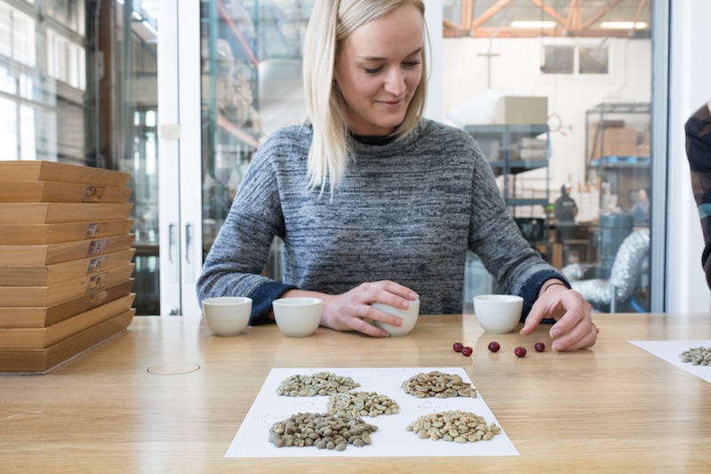

-
我从咖啡中获得的快乐是我自己烤的......这是在互联网无处不在之前，有条不紊地从这些个人发现中获取快乐，所以我觉得自己像个探险家。- 创始人 詹姆斯弗里曼
如今，追求优质咖啡的任何人都可以通过几次点击发现基本知识。但是当坚持方法取代快乐时会发生什么 - 当问题：“这是正确的方式”使更基本的问题黯然失色：“我喜欢这样做吗？”
无论你把它称之为直觉，本能还是即兴创作，我们都想花一点时间来承认酿造咖啡的鲜为人知的方面，这使你在享受早晨仪式方面有所不同。我们采访了Blue Bottle的两位长期同事，他们的工作与咖啡质量有关。我们很想知道直觉如何影响他们的咖啡生活。
Willy-nilly”是咖啡和技术研发专家Kelly Sanchez描述他每天早上为自己和妻子酿造的双重Chemex的方法。这是一个人，在Blue Bottle，量化单一起源的峰值窗口 - 在烘焙咖啡生命中最具表现力的几天。就像前卫爵士乐的批评者一样，凯利对细微差别的关注令人印象深刻。然而，当谈到早晨与他的妻子，凯利优先考虑一个不紧不慢的节奏和良好的食物而不是咖啡完美。如果凯利酿造一个新的单一起源，他将这样做而不改变他的研磨机上的设置。如果水垢在中间倾倒，凯利估计剩余的水量。凯利看来，在家里煮咖啡，“应该带给你快乐。
卡莉担任绿色咖啡协调员的角色要求她试吃以前从未采样过的数百种咖啡。她说，直觉是关键，因为她决定如何烤咖啡样品是基于她之前从类似地区烘焙咖啡的经验。一旦卡莉开始，感官线索就会超过任何有预谋的计划。焙烤是一种多感官行为，但对于卡莉来说，咖啡豆的焦糖化视觉变化最能引导她的决策过程。卡莉认为，“每个烤肉的人都有自己喜欢或最发达的感觉。相信这一点很重要。
我们强调咖啡酿造中的复制和科学方法，但在例行程序中进行实验和改组是令人惊讶的。“很多咖啡知识都是基于人们的观察，”凯利提醒我们。“所以经常，这只是一个人，”他说，“可能是一个三十岁的男人，他让他的直觉引导他，现在他告诉你，'就是这样。'”凯利提醒我们，当他从蓝瓶开始，咖啡师没有使用秤，但只有他们敏锐的感官和可敬的经验帮助他们中的一些，每次都能拉出漂亮的镜头。
探索改变法国媒体 常规的新方法。
-
分享这个故事
也在顾客评价
夏季是为了Affogato
相反的甜蜜证据吸引人由蓝瓶工作人员